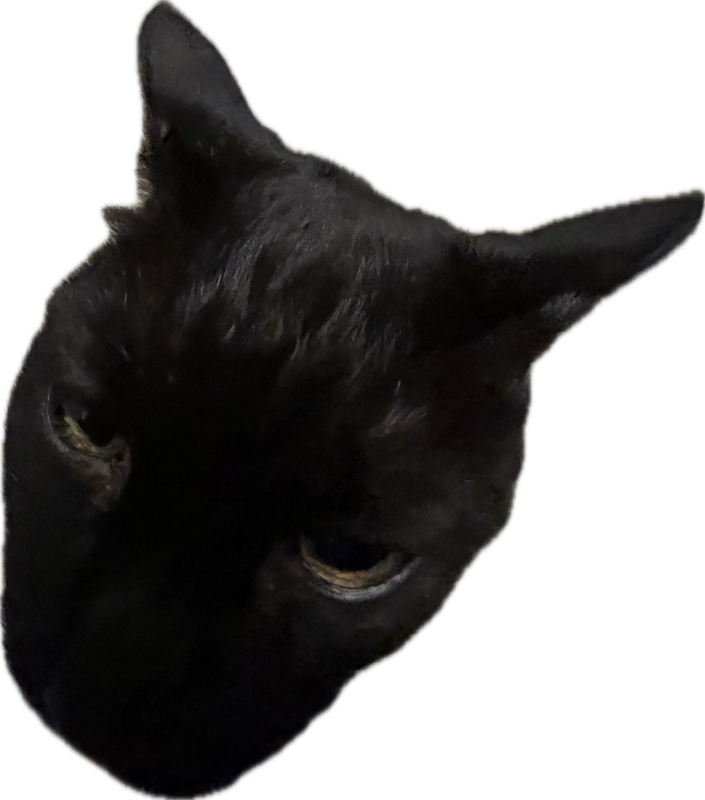
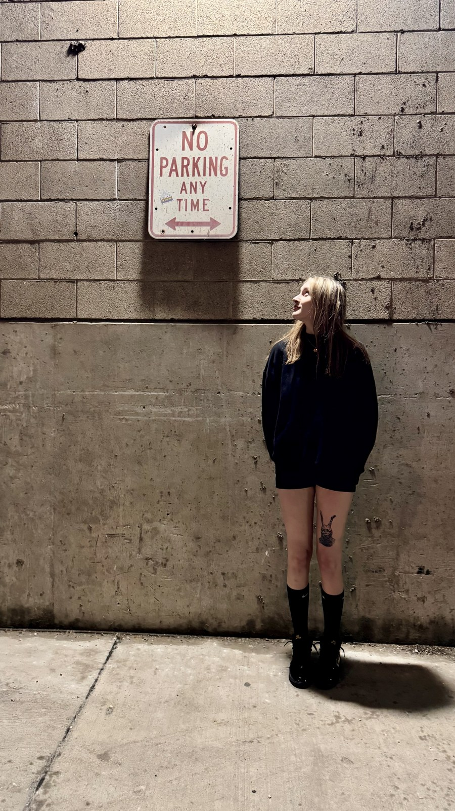
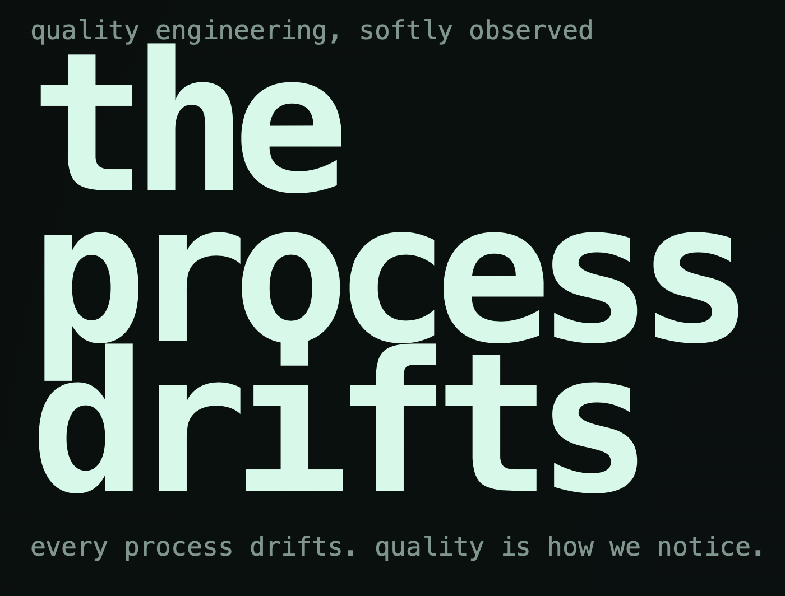

DanielleKrzeminski
DanielleKrzeminski
Theme
DanielleKrzeminski

As someone who has a very healthy curiosity for life, it's safe to say that I will always have more questions than answers. For this I like to reference the Socratic paradox which says, "I know that I know nothing." I love this because simply learning one new thing can easily drift into discovering endless additional topics in which reconnaissance becomes an adventure. Essentially, this is a driving factor for me and I carry it with me anywhere that I go. I like to follow this curiosity through life as if it were a scent trail to a delicious dessert in a cartoon.

Entropy can be a very tricky topic. It is a measure of chaos and disorder. It is the way we judge how unpredictable something is. This can be applied to any and every aspect of life — careers, relationships, physics, etc. Here is my description of how entropy appears in quality systems. This project is both technical and poetic by design.
Open Project
I started out leading a shop-floor data entry rollout and training a group of operators on the new process, which turned into my first real exposure to the world of IATF 16949 and ISO 9001 — the standards that quietly hold a lot of manufacturing together. It was less about memorizing a framework and more about watching how much smoother a floor runs once everyone's working from the same source of truth.
From there I moved into the hands-on side of inspection: running dimensional inspections on a CMM through PC-DMIS, overseeing final inspection on a high volume of parts every day, and learning hard gauging techniques well enough to teach them. Keeping clean defect logs and material certs sounds unglamorous until you realize they're the paper trail that keeps everyone honest when something does go wrong.
These days my role has widened out. I manage the communication loop with dozens of outside suppliers when material comes back defective, train new operators and technicians on our gauge management software, and keep calibration records current across more than a thousand gauges — the kind of quiet infrastructure work that nobody notices until it's missing. I lead the weekly process audits that tie all of it together, and I lean on a Lean Six Sigma framework that's genuinely changed the way I think through a problem, not just at work.
The coursework and certifications behind the work in Experience — mostly CMM and PC-DMIS training through Hexagon, plus a Lean Six Sigma Green Belt.
A curated collection of written work centered on quality engineering, psychology, philosophy, and complex systems thinking.